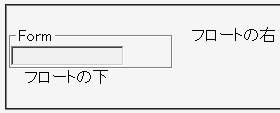
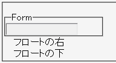

fieldset要素に対してfloatプロパティを指定しても無視されてしまう。従って、fieldset要素のボックスはフロートにすることができない。
<form> <fieldset style="width:10em; float:left;"> <legend>Form</legend> <div><input type="text" style="width:8em;"></div> </fieldset> <p>フロートの右</p> <p style="clear:left;">フロートの下</p> </form>
fieldset要素をフロートにしています。fieldset要素の直後にあるp要素の内容物はフロートの右方に回りこむはずです。
WinIE6.0での表示（標準モード）
Opera7.11での表示（標準モード）